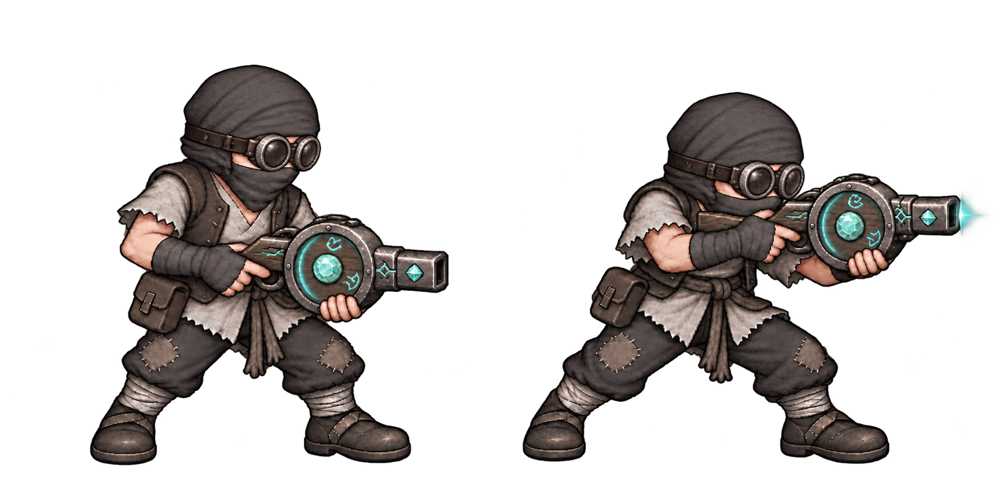
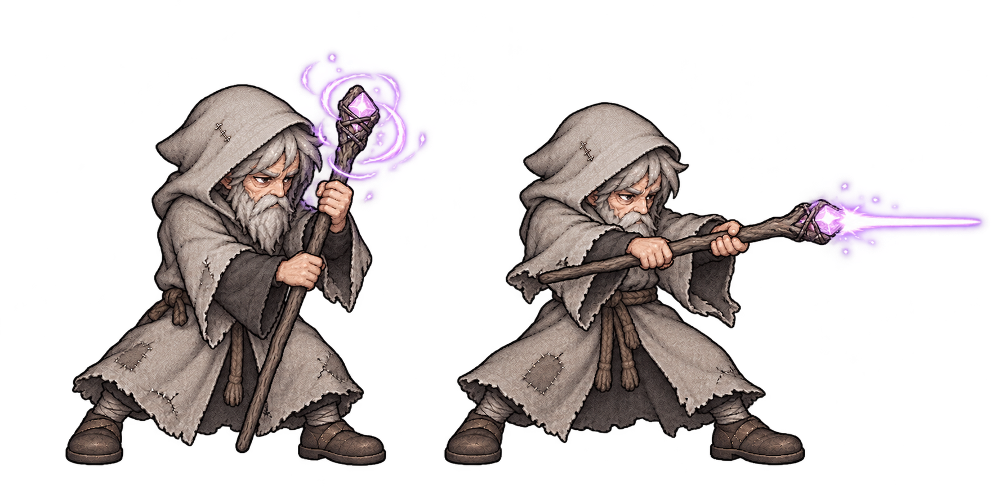
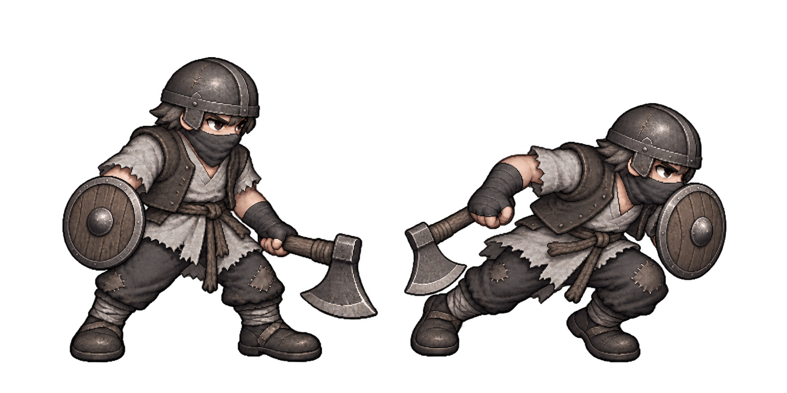
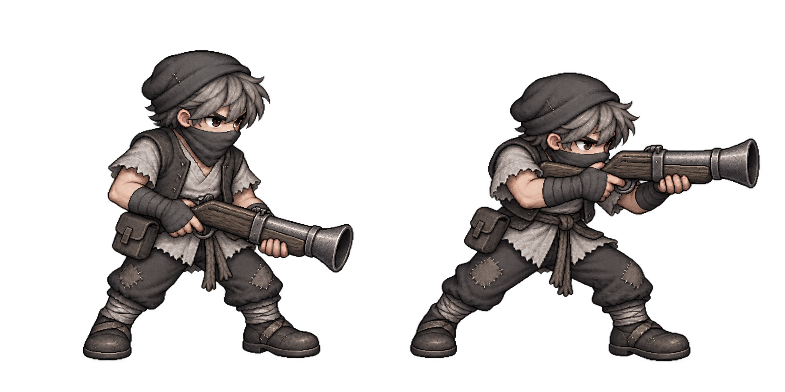

낡은 중갑 도약 거인 v2 — 컨펌 대기
메가나이트를 참고한 회색 중갑·닫힌 투구·양손 철퇴 글러브. v2는 긁힘·마모·찌그러짐을 추가해 오래 쓴 갑옷으로 표현했습니다. 아래 그림은 정지와 도약준비 자세입니다. 게임에 아직 적용하지 않았습니다.
컨펌 후 로컬구현 → 첫 보스 시안·컨펌·구현 → 묶음 테스트·배포 순서입니다.
이전 승인 캐릭터
고글 반사사수 v3·광선마법사 v2 — 승인·로컬구현
승인 디자인입니다. 로컬코드 연결만 완료했으며 테스트·푸시·운영배포는 아직 하지 않았습니다. 저장된 이미지를 직접 표시하는 별도 보기 페이지입니다.
반사 사수 v3 — 두건·고글
머리카락을 전부 두건 안으로 넣고 둥근 고글을 착용. 기존 마탄총·회색옷·입가리개 유지.

원본 보기 · 수정 프롬프트
광선 포대
수수한 회색 로브의 노인 마법사. 나무 지팡이 충전 → 광선 발사. 짧은 광선은 컨셉 표현이며 게임에는 적용하지 않았습니다.

원본 보기 · 생성 프롬프트
아래 두 종은 승인·로컬 구현 완료 / 미검증·미배포
돌진병 v2 — 작은 라운드 실드
평범한 철모·도끼·회색 옷·입가리개. 작은 원형 나무 방패를 더하고 돌진할 때 앞세웁니다. 방패의 방어 기능은 확정하지 않았습니다.

원본 이미지 열기 · 생성 프롬프트
산탄 사수 — 현재 시안
천모자·짧은 나팔총·회색 옷·입가리개. 정지와 조준 자세.

원본 이미지 열기
돌진병 이전 시안 비교